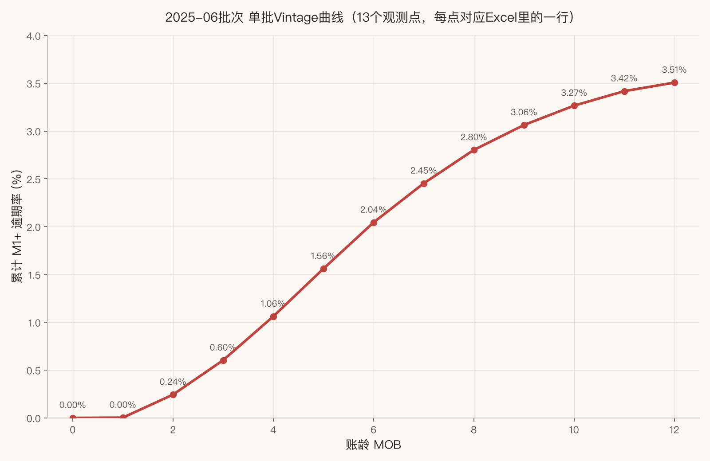
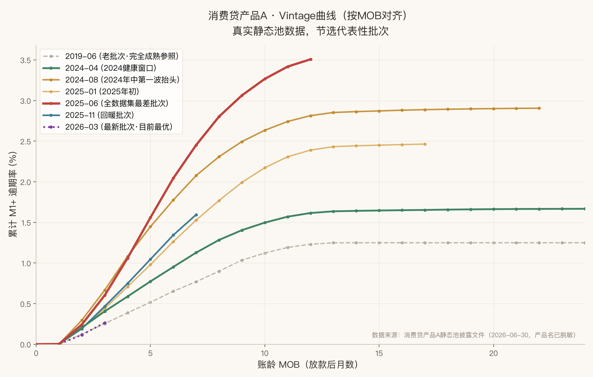
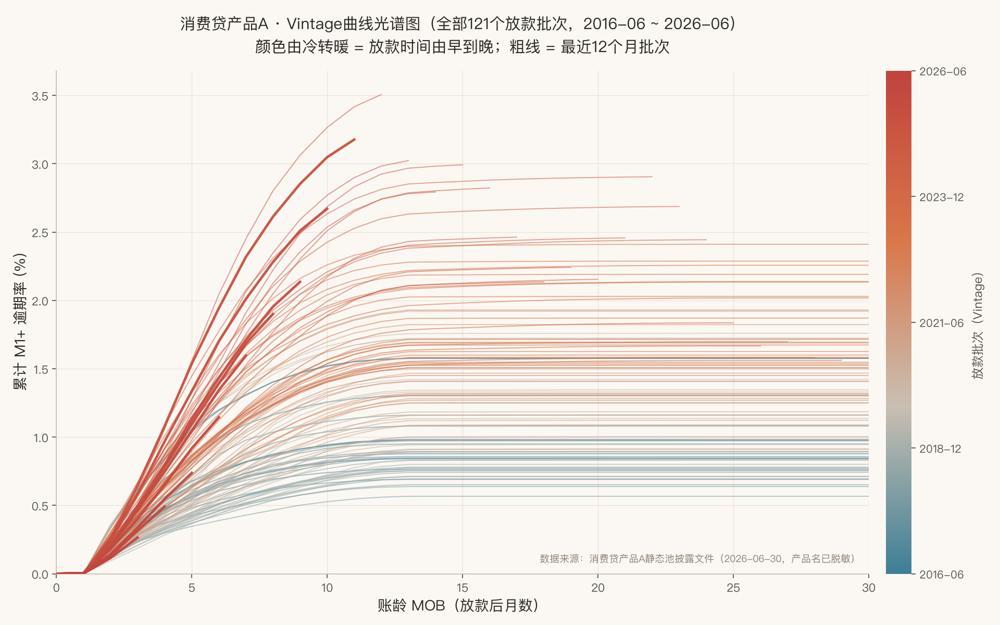
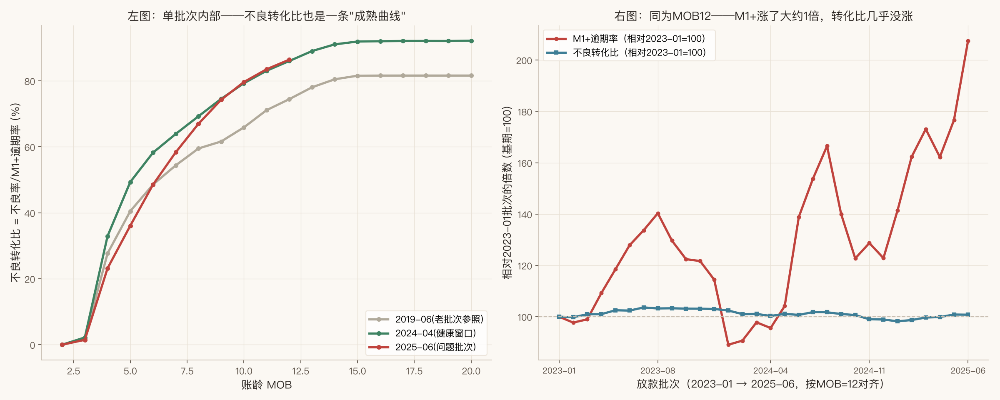
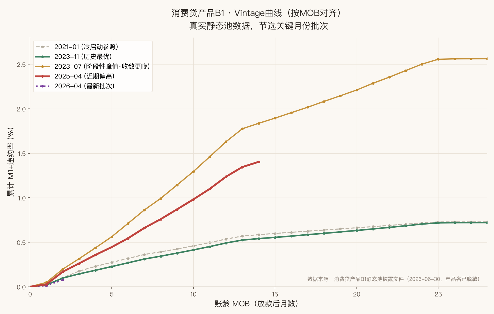
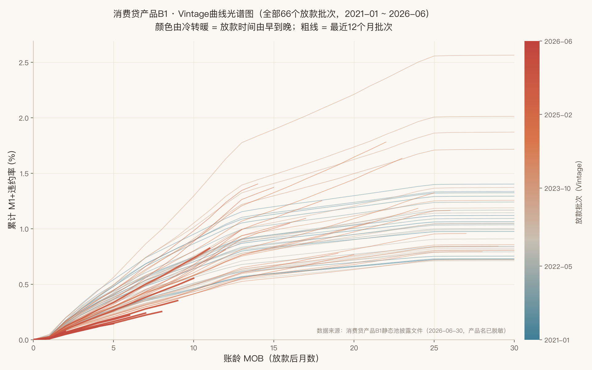
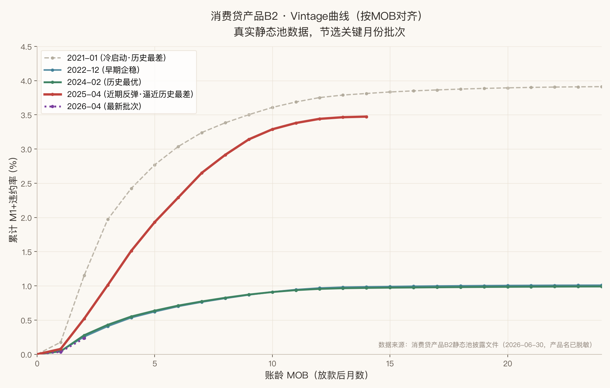
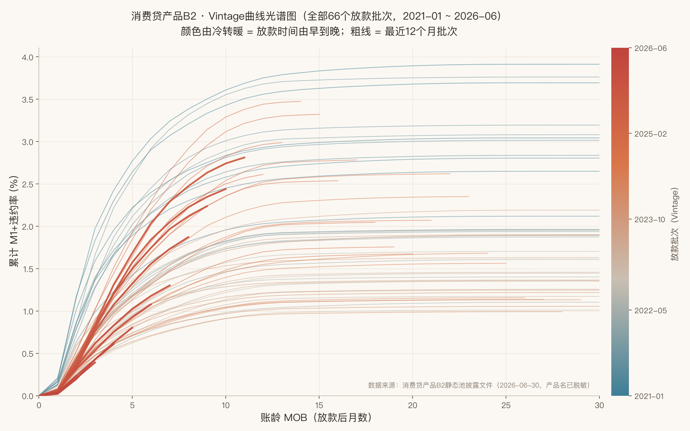
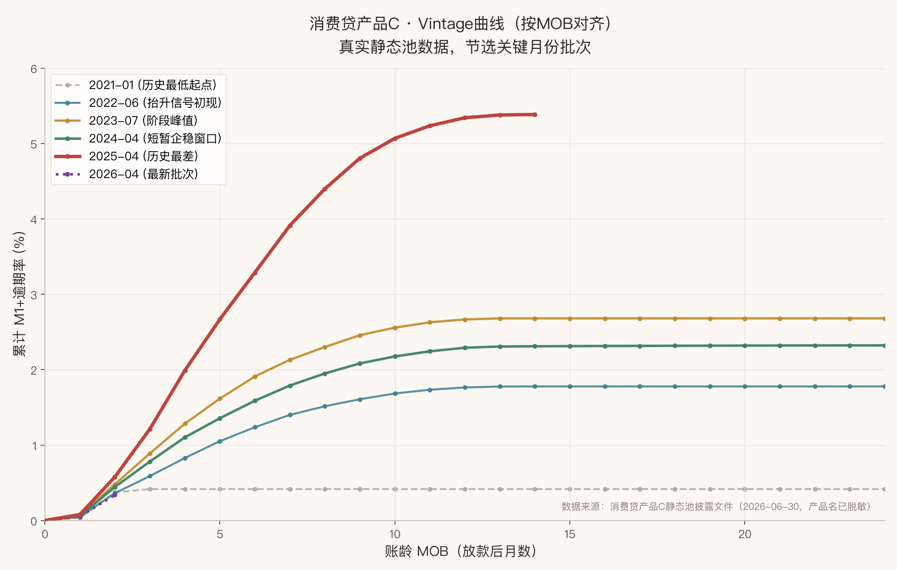
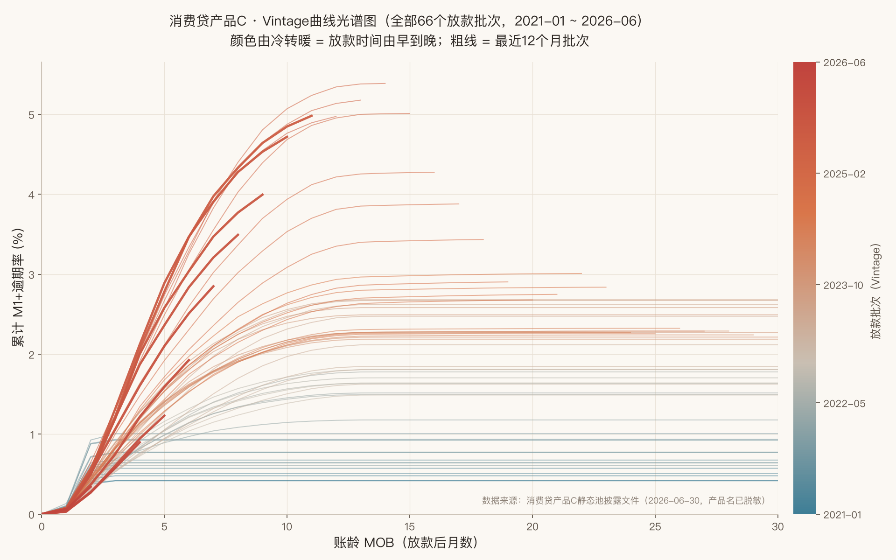

同一款贷款产品，1月放的款和10月放的款，风险能差出一大截。只看"整体不良率"，这个差异会被完美掩盖——本节教你怎么拆开看。
这是整个模块的出发点，也是最值得记住的一句话。
假设你负责一款消费贷产品，2026 年 9 月看整体逾期率是 3.5%，趋势线也只是缓慢爬升，看起来"可控"：
Vintage 分析的全部逻辑，建立在这两个词上。搞懂它们，后面的指标和图表都不难。
MOB 的时间轴长这样（以某一批贷款为例，放款后逐月计数）：
一张 Vintage 报表通常盯这 5 样东西，各回答一个不同的问题。
把每个批次的累计逾期率，画成随 MOB 变化的折线，就是最经典的 Vintage 曲线。下面用同一份底层数据（跟图A完全同源），换成"分批次+账龄对齐"的画法，看看故事怎么变。
读 Vintage 曲线的四个信号：
| 信号 | 怎么看 | 可能原因 |
|---|---|---|
| 曲线整体上移 | 新批次在每个 MOB 都比老批次高 | 客群放宽、渠道劣化或宏观环境恶化 |
| 早期（MOB1~3）快速抬升 | 头几个月就飙升，不等后期慢慢暴露 | 多半是欺诈或准入审批出了漏洞 |
| 中后期持续爬升不收敛 | MOB9后曲线还在明显往上走，迟迟不趋平 | 长期风险高，产品定价可能不足 |
| 某批次突然偏离 | 单独一批明显异于前后批次 | 去查那个月的策略、渠道、通过率是否变了 |
Vintage 曲线告诉你"逾期的钱有多少"，迁徙率告诉你"已经逾期的钱，有多大概率继续恶化下去"——这是催收效果的直接体现。
把前面几节的图表和指标串成一个完整的分析流程——这是资产质量分析在真实工作中被使用的样子。
最成熟的 2025-01批次核销曲线已知：
| MOB | 核销率 | 占最终值比例（成熟度） |
|---|---|---|
| MOB3 | 0.3% | 8% |
| MOB6 | 1.6% | 42% |
| MOB9 | 2.9% | 76% |
| MOB12 | 3.6% | 95% |
| MOB18（视为最终稳定值） | 3.8% | 100% |
2025-10批次目前观测到 MOB6 核销率 = 2.3%（远高于老批次同期的1.6%）。用老批次的"成熟度曲线"做外推：
公司对这类产品设定的风险容忍上限是 3.5%。→ 5.5% 远超上限，损失外推结果足以支撑"立即收紧"的决策，不需要再等9个月等它自然成熟验证。
收藏这张卡片，日常看报表时对照用。
前面9节用的都是为了讲清楚概念而编的示例数据。这一节换成一份真实的信贷ABS静态池披露文件，把同一套方法论重新走一遍——你会看到：结论方向没错，但真实世界比教程例子复杂得多，还会冒出教程没讲过的新东西。
先搞懂这张表的"行"是什么：每一行不是一笔贷款，而是"某个放款批次，在某个统计月末的一次快照"。同一个放款批次会重复出现很多行，每多过一个月就多一行。以放款时间=2025-06这一个批次为例，从2025-06-30到2026-06-30正好13个月末，筛出来就是13行：
| 期数 | 统计时间 | MOB=期数-1 | 逾期金额1-30 | 逾期金额31-60 | …180+ | 文件自带 M1+逾期率 |
|---|---|---|---|---|---|---|
| 1 | 2025-06-30 | 0 | 589万 | 0 | 0 | 0.000% |
| 2 | 2025-07-31 | 1 | 2.67亿 | 209万 | 0 | 0.002% |
| 7 | 2025-12-31 | 6 | 4.63亿 | 4.21亿 | 1899万 | 2.043% |
| 13 | 2026-06-30 | 12 | 5749万 | 7768万 | 18.6亿 | 3.507% |
df = pd.read_excel('消费贷产品A_static_2026-06-30.xlsx', sheet_name='静态池')
v = df[df['放款时间'] == '2025-06'].sort_values('期数')v['MOB'] = v['期数'] - 1表里有两条路：路线A直接用文件自带的 M1+逾期率 列；路线B是自己把7个逾期区间桶（1-30/31-60/…/180+）加总除以放款总额，"自己造"一个逾期率。我实测两条路线算出来的数完全不一样，而且差异方向会随时间反转：
| MOB | 路线B：7个桶余额直接加总÷交易额 | 路线A：文件自带M1+逾期率 |
|---|---|---|
| 1 | 0.31% | 0.002% |
| 4 | 1.64% | 1.06% |
| 9 | 2.97% | 2.80% |
| 12 | 3.18% | 3.51%（反而更高） |
v['M1+逾期率_pct'] = v['M1+逾期率'] * 100
plt.plot(v['MOB'], v['M1+逾期率_pct'], marker='o')
做多批次对比/光谱图时，唯一区别是把筛选条件从"放款时间=='2025-06'"换成对全部121个批次循环，每次重复步骤1-4得到一条曲线，再用放款时间早晚映射成颜色叠加到同一张图——下面10.3节的两张图就是这么来的。
把全部批次在每个统计月的余额和逾期金额直接加总，算出一个"整体逾期率"：
| 统计时间 | 整体逾期率（全部批次混合） |
|---|---|
| 2023-06 | 14.85% |
| 2024-06 | 18.50% |
| 2025-06 | 16.97% |
| 2026-06 | 20.43% |
数字高得离谱（消费贷正常水平不会到20%），而且缓慢抬升。但按账龄拆开2026-06这一个截面就发现，这跟"整体口径骗人"是同一个病、不同的病灶：
| 账龄段 | 余额占比 | 逾期贡献占比 | 逾期率 |
|---|---|---|---|
| MOB0-6（新批次） | 69.0% | 4.3% | 1.29% |
| MOB7-12 | 13.5% | 16.4% | 24.8% |
| MOB13-24 | 7.0% | 28.1% | 81.6% |
| MOB25+（老尾巴） | 10.5% | 51.2% | 100.0% |
挑7个有代表性的批次，按MOB对齐：

再把全部121个批次叠加同框，用颜色深浅表示放款时间早晚：

指标一：迁徙率proxy（用当期1-30逾期余额→下期31-60逾期余额的比例近似）：
| 批次 | M1→M2迁徙率(均值) | M2→M3迁徙率(均值) |
|---|---|---|
| 2024-04（健康） | ~78% | ~95% |
| 2025-06（问题） | ~79% | ~95% |
| 2025-11（回暖） | ~81% | ~95% |
指标二：不良转化比（不良率÷M1+逾期率，衡量"进了逾期的钱最终有多大比例真滑向不良"，同一行两个字段直接相除，不需要跨期）：

还没成熟的批次（比如刚放款半年的2025-11批），此刻的 M1+逾期率只是"半成品"，不能直接当终值用。但历史上其他批次的曲线告诉我们：同一款产品，不同批次的"曲线形状"通常是相似的——虽然每批的高低不一样，但从 MOB6 长到 MOB12，涨的倍数往往落在差不多的区间。这就给了我们外推的依据：用历史批次"从MOB6长到MOB12平均涨了多少倍"，去推算新批次将来会长成什么样。
第一步：算出"历史平均成熟度倍数"。做法是——找一批已经同时观测到 MOB6 和 MOB12 的历史批次（这里用2022-2024年的36个批次），对每一个批次单独算：
节选9个批次看实际算出来的样子：
| 批次 | MOB6值 | MOB12值 | 成熟度倍数=MOB12÷MOB6 |
|---|---|---|---|
| 2022-01 | 0.74% | 1.25% | 1.688 |
| 2022-09 | 1.00% | 1.49% | 1.488 |
| 2023-05 | 1.25% | 2.00% | 1.604 |
| 2024-01 | 0.99% | 1.51% | 1.514 |
| 2024-09 | 1.49% | 2.37% | 1.584 |
36个批次单独算下来，每一个的倍数都不完全一样（从1.49到1.74不等，这是正常的批次间噪音），把36个倍数取平均，就得到一个更稳的"典型涨法"：
第二步：把这个倍数用到还没成熟的新批次上：
逻辑很直接：既然历史上"MOB6→MOB12"平均涨1.59倍，那把这个倍数套到一个刚观测到MOB6、还没走到MOB12的新批次身上，用它当前的MOB6值乘以1.59，就是对它MOB12终值的一个估计。
用这个公式外推2025年下半年批次的终局水平：
| 批次 | MOB6已观测值 | 外推MOB12终值 |
|---|---|---|
| 2025-07 | 1.94% | 1.94% × 1.59 ≈ 3.09%（仍偏高） |
| 2025-09 | 1.43% | 1.43% × 1.59 ≈ 2.28% |
| 2025-11 | 1.34% | 1.34% × 1.59 ≈ 2.14% |
| 2025-12 | 1.14% | 1.14% × 1.59 ≈ 1.82%（接近2024健康基准2.04%） |
用同一方法反推一个已经知道真实答案的批次做校验——2025-06批当时MOB6观测值是2.04%，外推值 = 2.04% × 1.59 ≈ 3.25%，而它现在实际已经走到MOB12，真实值是3.51%，外推低估了约8%。
除了Vintage曲线，这张表还有5组"原材料"字段没用完：还款结构(正常/提前/逾期各区间还款)、收入(日息/罚息/手续费)、笔数(发放/存量)、未逾期金额。实际验证过的几个：
同一批静态池披露文件里，除了消费贷产品A，还有另外三个产品——B1、B2、C，覆盖期同样是2021-01~2026-06（66个批次）。用完全相同的方法论（10.1节的步骤）各跑一遍，每个产品出两张图：关键月份图（挑5-6个有代表性的批次对比）和全口径光谱图（全部66批次叠加，颜色按放款时间冷暖渐变）。
MOB12水平常年在0.5%~1.6%之间波动，2023-07有个短暂峰值（收敛较晚，要到MOB25才真正走平到2.56%），但2025-04的偏高（1.24%）幅度远小于其他产品的同期问题。全口径光谱图上，最差的几条线夹在光谱中段（2023年批次），最新12个月的批次（深红）反而落在偏健康的区间——是四个产品里唯一没有表现出"整体上移"信号的。


2021-01冷启动批次是全历史最差（3.75%），随后逐年改善，2024-02触底至历史最优（0.96%）——降幅接近75%；但2025-04（3.44%）几乎把改善成果全部吐回去，逼近冷启动时的水平。全口径光谱图上能看得很清楚：蓝色（2021年）扎堆在最上方，米黄色（2022-2024）压到最低，最新的深红色正在往上爬，还没追上最早那批，但趋势很陡。四个产品里波动幅度最大的一个。


2021-01历史最低（0.42%）一路爬升到2025-04历史最差（5.34%），涨了近12倍，中间只有2024年上半年一个"短暂企稳窗口"（~2.2%~2.3%），几乎没有像B2那样的深度回调。全口径光谱图呈现出教科书式的彩虹排列——蓝色垫底、红色封顶，几乎每一条新批次的线都比前一条更靠上。三个新产品里，这是长期趋势最干净、最没有例外的一个，也是消费贷产品A的十年光谱图之外，最适合用来教"曲线整体上移"这个信号的真实案例。


四个产品放在一张表里对比：
| 产品 | 形态 | 历史最优(MOB12) | 历史最差(MOB12) | 2026年最新批次早期表现 |
|---|---|---|---|---|
| A（消费贷） | 十年缓慢单边上移 | 1.25%(2019-06) | 3.51%+(2025-06，未收敛) | 优于近三年同期 |
| B1 | 温和波动，无长期趋势 | 0.49%(2023-11) | 2.56%(2023-07) | 优于近三年同期 |
| B2 | U型：差→优→接近打平回冷启动 | 0.96%(2024-02) | 3.75%(2021-01) | 优于近三年同期 |
| C | 近乎单调的长期恶化 | 0.42%(2021-01) | 5.34%(2025-04) | 优于近三年同期 |
方法论方向没有错——Vintage对齐、迁徙率、成熟度外推法在真实数据上全部验证有效。但真实世界比教程例子复杂，补充了四处教程没讲到的地方：
Vintage 分析的本质，是给每一批贷款建立独立的"成长档案"，让风险无处藏身。它不需要复杂的建模技巧，核心就是三件事：把放款按月分组、盯住同账龄（MOB）表现、对照策略变化去解读。养成这个习惯，你对资产质量的判断会比只看整体数字的人敏锐得多。